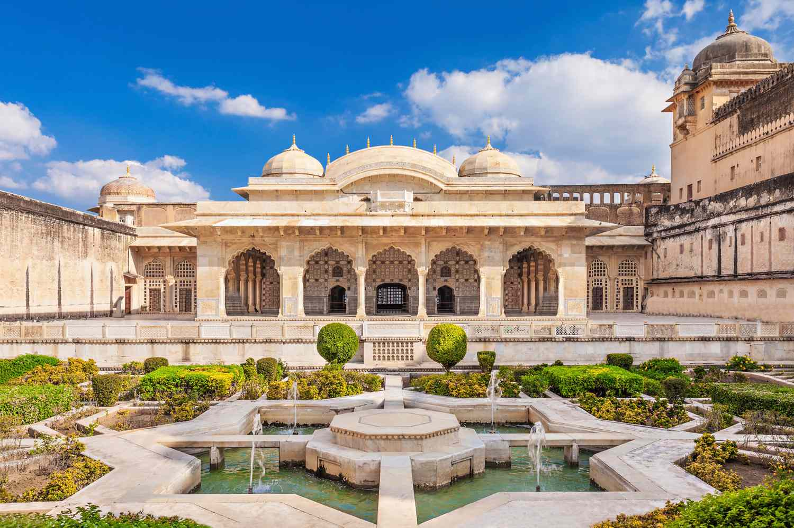
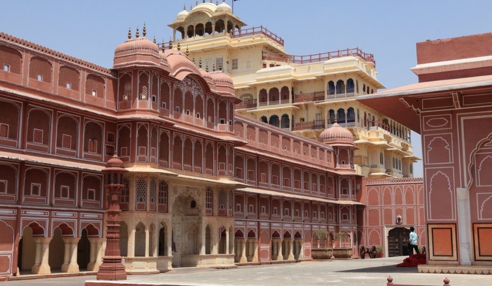
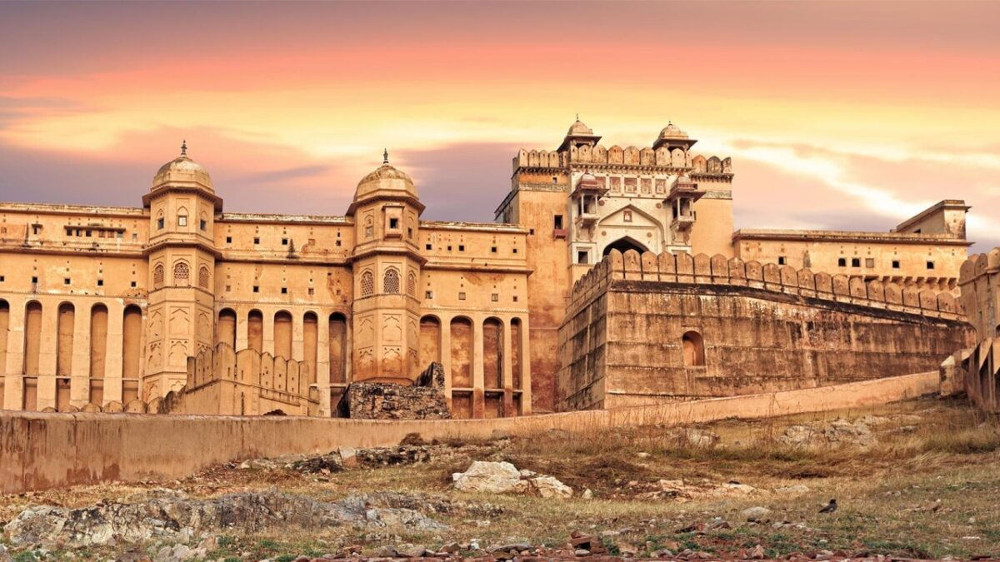

Rajastan
Description
Rajasthan, located in the northwestern part of India, is the largest state in the country by area. It is known for its rich history, vibrant culture, and stunning architecture. Bordered by Punjab to the north, Haryana and Uttar Pradesh to the northeast, Madhya Pradesh to the southeast, and Gujarat to the southwest, Rajasthan is often referred to as the "Land of Kings" due to its royal heritage and numerous palaces and forts.
The state is home to several magnificent cities, each with its own unique charm. Jaipur, the capital city, is known as the Pink City due to its pink-colored buildings and is famous for landmarks like the Hawa Mahal and Amer Fort. Other notable cities include Udaipur, the City of Lakes; Jodhpur, the Blue City; and Jaisalmer, the Golden City.
Rajasthan's diverse landscapes range from the Thar Desert in the west to the Aravalli Range in the east. The state is also known for its vibrant festivals, traditional music and dance, and exquisite handicrafts, including textiles, pottery, and jewelry.
The cuisine of Rajasthan is characterized by its rich flavors and use of spices. Popular dishes include Dal Baati Churma, Gatte ki Sabzi, and Laal Maas. The state is also famous for its sweets, such as Ghevar and Mawa Kachori.
Places to Visit in Rajastan
-
Hawa Mahal

The Hawa Mahal, known as the Palace of Winds, is famous for its unique honeycomb design with 953 small windows that allow cool air to circulate inside.
-
Amber Fort

The Amber Fort, perched on a hilltop overlooking Maota Lake, showcases a blend of Rajput and Mughal architecture and features stunning palaces and courtyards.
-
City Palace

The City Palace is a grand complex of courtyards, gardens, and buildings, reflecting Rajput, Mughal, and European architectural influences.
-
Jantar Mantar

Jantar Mantar is an ancient astronomical observatory built by Maharaja Sawai Jai Singh II, featuring large architectural instruments used for celestial observations.
-
Nahargarh Fort

Nahargarh Fort, overlooking Jaipur, offers panoramic views of the city and hills. It was a retreat for the royal family and is known for its scenic beauty.
Best Time to Visit Jaipur
The best time to visit Jaipur is during the winter months, from October to March, when the weather is pleasant and ideal for exploring the city's attractions.